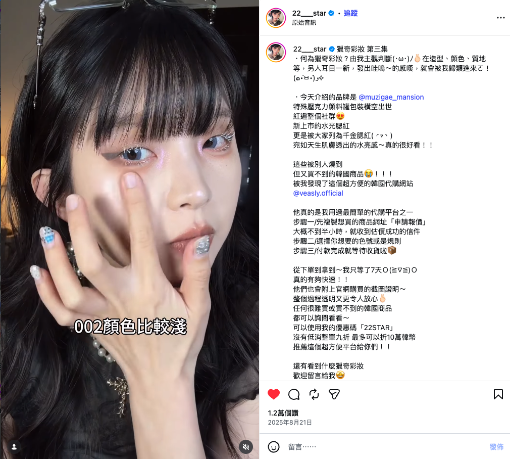

01 / CASE STUDYBEAUTY / CREATOR COLLABORATION
뷰티의 매력을 현지의 언어로
Muzigae Mansion · VEASLY
146만협업 콘텐츠 조회수 · 약캡처 시점 기준 · 플랫폼 반올림 표시
프로젝트 읽기 견심여 ASHLEY
대만 소비자의 취향을 읽고,
브랜딩·콘텐츠·인플루언서 협업으로 연결하는 마케터.

안녕하세요, 마케터 견심여입니다. 대만에서 자라 한국에서 경영학을 공부했고, VEASLY에서 대만 소비자와 한국 팀 사이의 소통을 맡아왔습니다.
현지의 질문과 반응을 읽어 콘텐츠로 만들고, 브랜드의 메시지를 크리에이터의 표현과 조율합니다. 소비자의 시각에서 브랜드를 더 깊이 이해하고, 함께 성장할 다음 팀을 찾고 있습니다.
팬의 불편함을 패키지 콘셉트로 풀고, 상품의 가치를 현지 고객이 이해할 메시지로 제안합니다.
상품과 고객 질문을 콘텐츠 기획·디자인·촬영·편집으로 연결하고, 반응을 다음 기획에 반영합니다.
크리에이터 발굴부터 조건 협의, 가이드·검수, 일정·이슈 대응, 게시와 정산까지 운영합니다.
Localization Manager · 대만 시장 담당
2025.04–2025.09 인턴 · 2025.09 정규직 전환
경영학 학사
각 프로젝트의 배경부터
제가 맡은 일과 결과까지.

01 / CASE STUDYMuzigae Mansion · VEASLY
02 / CASE STUDYG-DRAGON 대만 한정 세트 · VEASLY
 03 / CASE STUDY
03 / CASE STUDY루어딘 디지털카메라 · VEASLY
 04 / CASE STUDY
04 / CASE STUDYalmostblue · VEASLY
 05 / CASE STUDY
05 / CASE STUDYVEASLY 대만 SNS